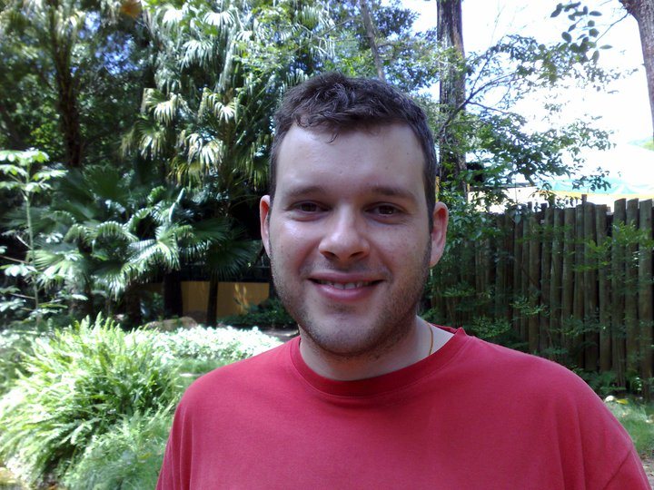

O Entrevistado(){
Entrevista
Por: Felipe Brandão Costa e Jackson Andrade Goulart

Luís Fernando Curci Chavier
printf: Antes de começarmos com as perguntas, conte-nos um pouco sobre você.
Luís Fernando: Sou empresário e desenvolvedor de software, e já trabalho na indústria há cerca de 12 anos. Tenho bastante experiência com software embarcado e programação voltada para hardware, que é uma área que eu gosto muito, mas também tenho experiência profissional com software mais tradicional, em linguagem de alto nível. Já trabalhei com aviões não tripulados (drones), sistemas de controle de acesso para empresas, sistemas de informação geográfica, software de gerenciamento financeiro para escolas e desenvolvimento web em geral. Hoje sou um dos sócios da Circuitar Eletrônicos, onde desenvolvemos e fabricamos, no Brasil, sistemas de eletrônica modular para profissionais, estudantes, pesquisadores e entusiastas da área.
printf: Poderia nos falar um pouco sobre a sua formação?
Luís Fernando: Eu entrei no curso de Bacharelado em Ciência de Computação em 1998, no ICMC (Instituto de Ciências Matemáticas e de Computação) da USP de São Carlos. Sempre gostei bastante de jogos eletrônicos, e decidi fazer iniciação científica em computação gráfica, mais especificamente na área de visualização cientifica. Mais para o final do curso, eu passei a me interessar mais pela parte de hardware. Sempre gostei de máquinas e dispositivos em geral, e a possibilidade de usar o meu conhecimento de software para controlar essas coisas me levou de vez para essa área. Nessa época eu fiz estágio em uma empresa, desenvolvendo software em assembly para microcontroladores de 8 bits, para acionamento de dispositivos de controle de acesso físico (ex.: catracas, cancelas, portas, etc.). Fiz mestrado na área de sistemas distribuídos, desenvolvendo um sistema para coleta de imagens aéreas georeferenciadas usando aviões ultraleves. Depois do mestrado eu decidi partir para o mercado de trabalho, na época trabalhando com aviões não tripulados, e a minha formação acadêmica parou por aí.
printf: De onde surgiu seu interesse, há quanto tempo e em que contexto você se envolveu com Internet das Coisas?
Luís Fernando: Eu sempre gostei dessa coisa de interagir com dispositivos do "mundo real". É uma experiência diferente de lidar puramente com dados na computação mais "tradicional". O fato de ver os resultados de um trabalho tendo efeitos no mundo físico é especialmente gratificante para mim, não sei explicar bem o porquê. A partir disso foi crescendo o interesse por software embarcado, e eu fui cada vez mais me envolvendo com essa parte de hardware. Hoje, com a crescente facilidade de adicionar conectividade a esses dispositivos (o que nem sempre foi fácil), o interesse pela Internet das Coisas foi simplesmente um passo adiante na mesma direção. O interesse pela parte de hardware em si surgiu há cerca de 12 anos atrás, no final da minha graduação. O meu interesse pelas idéias relacionadas à Internet das Coisas foi surgindo aos poucos de lá para cá, antes mesmo de inventarem este termo.
}